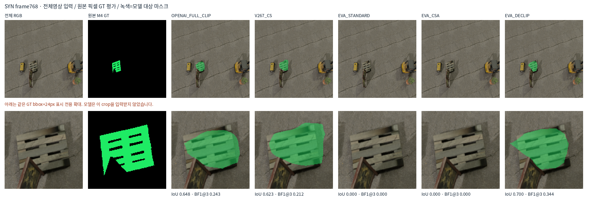
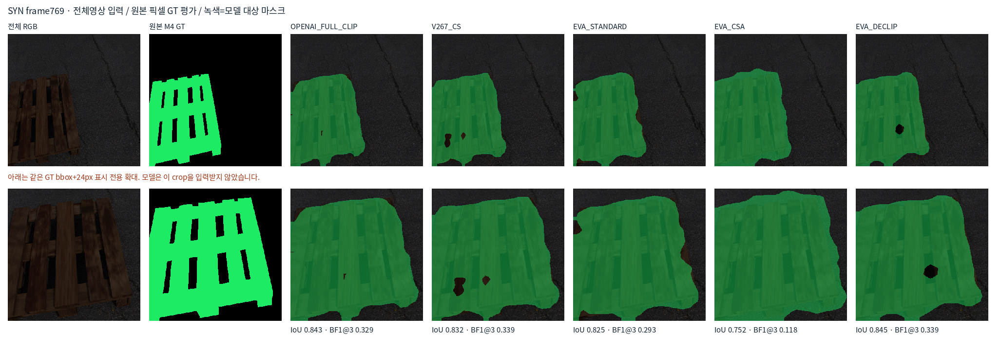
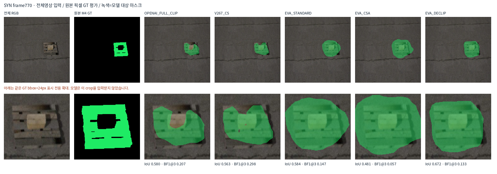
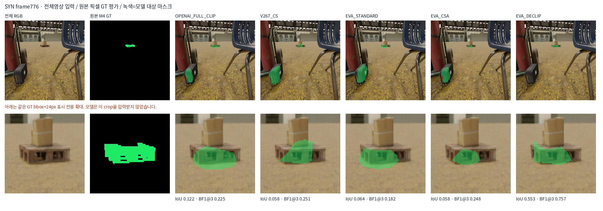
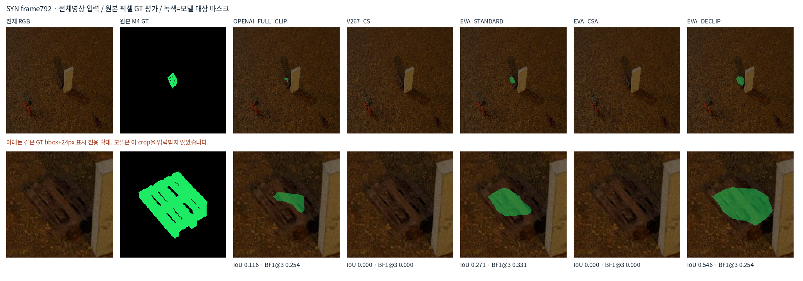
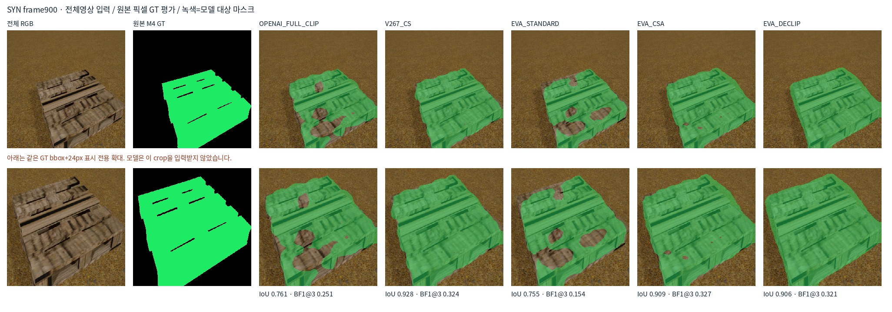

전체 영상이 모델 입력이며 아래 확대는 표시 전용입니다. 원본 픽셀의 IoU·Dice와 경계1/3px precision/recall/F1을 같은 조건으로 계산했습니다. 실사 키포인트 보임/가림 성능을 대신하지 않습니다. 공개 DeCLIP 백본은 COCO 이미지 무라벨 증류를 거쳤고 새 팔레트 mask head 학습은 합성뿐입니다.
| 모델 | IoU | Dice | 경계F1@1px | 경계F1@3px |
|---|---|---|---|---|
| OPENAI_FULL_CLIP | 0.6602 | 0.7953 | 0.1243 | 0.2515 |
| V267_CS | 0.6529 | 0.7900 | 0.1252 | 0.2499 |
| EVA_STANDARD | 0.6446 | 0.7839 | 0.1065 | 0.2147 |
| EVA_CSA | 0.5107 | 0.6761 | 0.0733 | 0.1460 |
| EVA_DECLIP | 0.7204 | 0.8375 | 0.1180 | 0.2457 |





